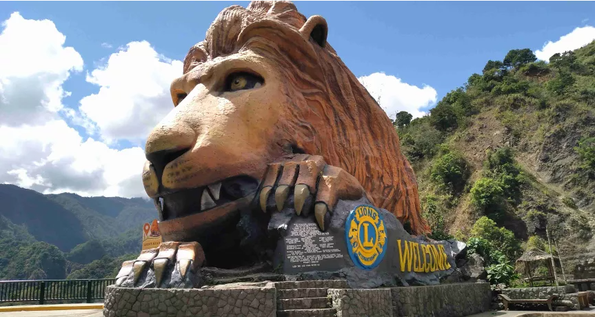
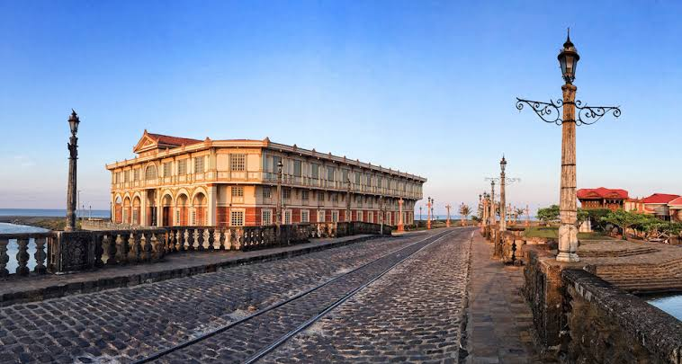
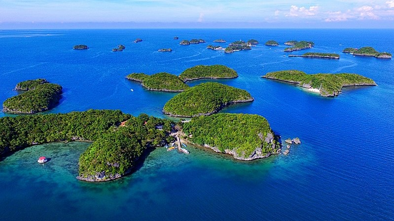

Card title
Some quick example text to build on the card title and make up the bulk of the card's content.
Card title
Some quick example text to build on the card title and make up the bulk of the card's content.
Card title
Some quick example text to build on the card title and make up the bulk of the card's content.
Introduction
I'm no expert but these are places I'd recommend you to travel to if you ever plan on visiting the Philippines. These places bring you nothing but excitement as you take a deep dive into a wonderful vibe of the scenic locations. Truly a one of a kind experience.
Baguio
Baguio City, famously known as the "Summer Capital of the Philippines," offers a refreshing escape from the lowland heat with its cool, pine-scented mountain air. As you can see from the dense urban spread built directly into the slopes of the Cordillera Central mountains, it is a bustling highland hub where nature meets city life. You can stroll through Burnham Park, explore the historic pine-covered grounds of Camp John Hay, or haggle for fresh produce and thrifted gems at the Night Market. Beyond the famous strawberries and scenic overlooks, Baguio has a vibrant arts scene and a unique charm that blends its indigenous heritage with its history as an American hill station.


Las Casas Filipinas de Acuzar
Located in Bagac, Bataan, Las Casas Filipinas de Acuzar is essentially a sprawling, open-air museum that transports you straight back to the 18th-century Spanish colonial era. Looking at the restored stone and wood structures reflecting off the tranquil waterways, you get a real sense of the painstaking work that went into dismantling these authentic stone houses from across the country and rebuilding them brick by brick. It offers a deeply immersive historical experience, complete with traditional river tours on a balsa, cultural shows, and a beautifully nostalgic atmosphere that highlights the grandeur of classic Filipino architecture.
Hundred Islands
The Hundred Islands National Park in Alaminos, Pangasinan, is a stunning natural wonder comprising 124 mushroom-shaped islets scattered across the Lingayen Gulf. The distinct, undercut shapes of the islands—visible as they rise sharply from the turquoise waters—are the result of millions of years of ocean erosion against ancient coral reefs. Accessible via a quick boat ride from Lucap Wharf, this protected area is a massive playground for island-hopping, where you can spend the day exploring popular spots like Governor's Island for its panoramic viewing deck or Quezon Island for picnicking and water sports. Whether you are kayaking between limestone outcrops or snorkeling in the clear waters, it is a top-tier coastal escape.
